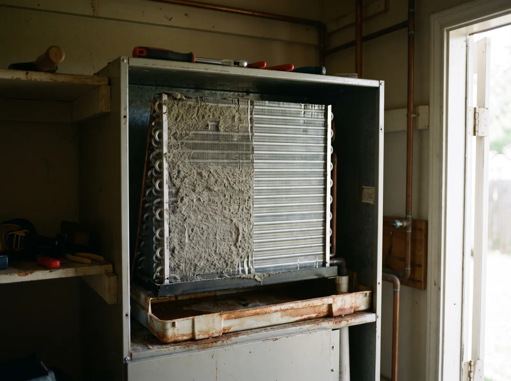

A matted coil is why your system runs all afternoon and still cannot catch up. We clean the coil face, the drain pan and the line while we are in the cabinet.

AC coil cleaning in San Antonio targets the evaporator coil inside your air handler — the cold surface every bit of your home’s air passes over. When it mats with dust, cooling capacity drops, runtime climbs, and in a San Antonio August that difference is impossible to ignore. We clean the coil, the condensate pan and the drain line in one visit, on homes throughout Bexar County.
We shut the system down, open the air handler cabinet, and inspect the coil face. Light dust comes off with a soft brush and a vacuum. A coil matted deep between the fins needs a no-rinse foaming cleaner rated for evaporator coils, worked in and allowed to carry the debris down into the pan as it liquefies.
Then the part that is often skipped: we clean the condensate pan and clear the drain line. Everything we lift off the coil ends up in that pan, and a slow drain in San Antonio humidity turns into standing water, then microbial growth, then an overflow switch tripping on the hottest day of the year. We reassemble, reseal the cabinet panel, and run the system to confirm the drop across the coil looks right.
The coil is the last thing the air touches before entering your rooms, and it is cold and wet whenever the system runs. Anything the filter misses arrives at a damp surface and sticks. A cheap fiberglass filter passes a great deal, and a filter left in past its date starts bypassing around the frame, which sends dust straight to the coil.
San Antonio speeds this up. Fine limestone dust and a long cooling season mean the system runs for more hours, moving more air past that wet coil than a system in a milder climate would. Add a leaky return pulling attic air and the coil can mat in a single season. Once the fins are blanketed, airflow falls, the coil gets colder than designed, and it freezes — which people mistake for low refrigerant and pay to have charged when the coil simply needed cleaning.
We give you one firm number after a short walkthrough rather than a phone guess that changes once the tech is in the attic. Be wary of any ad quoting a whole house before anyone has seen it.
Go coil-only when the symptoms are about performance: long runtimes, weak cooling, a rising bill, a freeze-up. Those point at the equipment, not the duct runs, and cleaning the coil is the direct fix.
Go full duct cleaning when the symptoms are about what is coming out of the vents: visible dust on startup, film returning a day after you clean, an allergy reaction that tracks with the seasons. That points at the runs themselves.
When you have both sets of symptoms — and plenty of San Antonio homes do — the sensible move is one visit that covers both, because the cabinet is open either way. See what a full duct cleaning covers.
Every two to three years for most San Antonio homes, given how long the cooling season runs here. Annually if you have pets, use inexpensive fiberglass filters, or the air handler sits in an attic with leaky returns. A system that freezes up more than once should be inspected regardless of timing.
Often, yes — a matted coil is one of the most common causes of weak cooling and freeze-ups, and it gets misdiagnosed as low refrigerant. It is not a cure-all: a failing capacitor, an actual refrigerant leak or a dying blower motor need a repair, not a cleaning. We will tell you honestly which one you are looking at.
Yes. Debris rinsed off a coil collects in the condensate pan, and in San Antonio humidity that sludge builds into a clog in the drain line. The pan backs up and either overflows or trips the safety switch and shuts your system off. Cleaning the pan and clearing the line is part of every coil job we do.
The outdoor condenser is a different coil and a different job, and it does matter in San Antonio where those units bake all summer. Ask when you book and we will tell you whether yours needs attention and what is involved.
If your AC runs all afternoon and still cannot catch up, the coil is the first thing to check. Call for a free walkthrough on your San Antonio home.